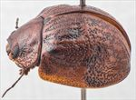
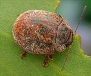
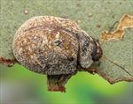
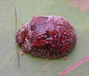
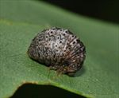
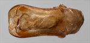
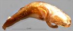
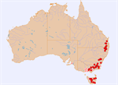

Click on images to enlarge
{kind=link}

Male, Jindabyne, S.E. New South Wales
{kind=link}

Male, Miena, Tasmania
{kind=link}

Female, Berridale, S.E. New South Wales
{kind=link}

Female, Boonoo Boonoo, N.E. New South Wales
{kind=link}

Larva, Wilsons Downfall, N.E. New South Wales
{kind=link}

Aedeagus, dorsal view (Rydal, New South Wales)
{kind=link}

Aedeagus, lateral view (Rydal, New South Wales)
{kind=link}

Distribution (pale-coloured circles indicate records obtained from iNaturalist)
Name
Trachymela rugosa (Chapuis)
Reference specimen
2006-158, Basket Swamp, Tenterfield, NE New South Wales.
Adult Description
Length: ♂ (7.3)7.7–9.1 mm (n=49), ♀ 8.0–10.2(10.7) mm (n=55).
Colouration:
- Head: usually uniformly reddish-brown with mandible tips dark brown or black, other black areas are frequently present – these may extend along the sutures, or a thin border along edge of eye extending posteriorly from just inside antennal insertion or clypeus and labrum may be partially or fully black; antennomeres 1–4 light brown, 5–11 always darker, either slightly darker, often with distal portion of each segment darker than proximate, or much darker, even black.
- Pronotum: brown, concolorous with or fractionally darker than head, frequently with indistinctly defined darker maculae that are usually coincident with elevated areas on either side of discal area, rarely the black area is more extensive.
- Scutellum: brown, concolorous with or fractionally darker than pronotum, rarely edged in a slightly darker shade.
- Elytra: brown, concolorous with or fractionally darker than pronotum, often with many contrasting small patches of lighter brown present over much of the disc and coincident with elevated areas, deeply depressed areas such as median depression are sometimes prominently darker in colour, humeral callus often similar to surrounds, sometimes of lighter shade.
- Venter & Legs: mid- to dark brown, sometimes head, or at least gula, black (Tasmanian specimens), legs fractionally lighter-coloured, posterior half of inner surface of elytral epipleura black, anterior half brown, less often fully brown or, rarely, almost completely black.
- Cuticular Wax: a sparse, less often moderately dense, but rather unevenly distributed layer of uniform shade that can be from light grey to light brown.
Morphology:
- Head: punctures variable, usually quite large (pd ≈ 2–3× ef) and somewhat to quite unevenly and moderately densely distributed, sometimes partially obliterated by rugose interstices, a small unpunctured, elevated area is usually present adjacent to fronto-clypeal suture and close to eye; antennae long (AL/BL: ♂ 56–58%, ♀ 55–57%), filiform.
- Pronotum: almost evenly curved transversely, with a broad, shallow depression situated behind the outside edge of each eye, surface of disc rugulose with many scattered, small, irregularly shaped slightly elevated areas, rarely smoother, puncturation moderately dense in discal area though sometimes partially obscured in discal rugulosity, puncture sizes mixed with largest similar in size or fractionally larger than those on head and very small punctures scattered throughout, punctures become much coarser at lateral margins; front margins join the thinner lateral margins in a smoothly rounded right-angle, with lateral margin initially straight but then curving smoothly and gradually towards rear margin.
- Scutellum: moderately densely and evenly to unevenly punctured, with punctures similar in size or slightly smaller than those on adjacent area on pronotum.
- Elytra: surface strongly curved, surface very rugose with many elevated verrucae and interstices, punctures distinct in places but more frequently obscured in the elytral rugulosity, with much smaller punctures scattered sparingly on the interstices, interstices are often quite large and many are placed in roughly longitudinal bands although some transversely aligned raised interstices are also present, many have central punctures, a deep but relatively small anterior-median depression is present, sometimes bisected by a longitudinal elevated interstice, humeral callus sometimes larger than typical, surface continuous or slightly discontinuous under it; vertical extension of epipleura considerable (HCE/PW = 0.38–0.42).
- Venter: prosternal process almost parallel-sided, closed anteriorly, short setae present at rear of prosternal process, absent from mesoventrite, a single large seta on anterior and median trochanter with sometimes some smaller ones also present; front edge of metaventrite beveled, truncate; inner edge of epipleura lacking setae.
Male Genitalia (Aedeagus):
- Dimensions: small (LPE/BL = 22–29%), subquadrate.
- Dorsal view: shaft approximately parallel-sided from base for much of length, then broadening considerably near apex before the sides converge towards apex in a smooth arc, dorsal surface smoothly curved with dorso-median channel usually absent, rarely faintly present, tip barely protruding, ostium transversely oval.
- Lateral view: shaft almost evenly curved throughout its length, thinning towards apex over 20% of length, tip slightly reflexed, very thin and spout-like, short protruding segment of flagellum is strongly curved and moderately thick.
Immature Stages
- Eggs: Described in de Little (1979).
- Larvae: Described in de Little (1979), also see Figure above.
Similar species
- Ta07: Individuals of this species, particularly males, appear very similar to Ta41, though are generally larger and more convex (particularly the females). The inner surface of the epipleura is completely black. The aedeagus of Ta41 is almost indistinguishable from that of Ta07 from its morphometric parameters. That of Ta41 tends to be wider at its widest point than that of Ta07 as a proportion of the width at the base. However, there is some overlap between the species in this character.
- Ta69: The cuticular wax on this species usually consists of a relatively dense and evenly distributed grey layer. It also lacks the quite prominent (and often black) post-basal elytral depression of Ta41.
Notes
- Taxonomy: Identification as Trachymela rugosa is from de Little (1979). It belongs to the “catenata” group of species, whose larvae feed and rest openly on their host.
- Distribution & Abundance: Occurs over a large latitudinal range in eastern Australia, from south-eastern Queensland to Tasmania. It is often abundant, particularly in the south of its distribution. The single record from South Australia (Kyeema Conservation Park, South Mt Lofty Ranges) on iNaturalist looks like a typical example of the species.
- Host Associations: Collected from a number of Eucalyptus hosts in the monocalypt group (subgenus Eucalyptus). These include Eucalyptus pauciflora (n=26), E. andrewsii (n=5), E. radiata (n=6) and unspecified peppermints (n=2). Stringybarks have been recorded as host for only 4 specimens from northern New South Wales and 2 from southern New South Wales. De Little (1979) found T. rugosa on 5 monocalypt hosts (14 records), and on 3 other hosts (a single specimen each on E. ovata, E. viminalis and E. dalrympleana, all Symphyomyrtus: Maidenaria).
- Morphological Variation: This very variable species has a body length distribution that covers a wider range than is typical for Trachymela species. There is considerable variation in the morphology of this species over its distribution. Three male specimens from Gunning, southern New South Wales, have a different surface texture and slightly darker colouring (including completely black inner epipleurae) than other Ta41 (including other specimens from the same location) and may in fact be Ta07.
Copyright © 2026. All rights reserved.